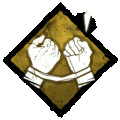
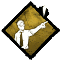

Dwight Fairfield
Dwight Fairfield é um nervoso Líder, capaz de localizar seus aliados e aumentar sua efetividade.
Ele é habilidoso em achar os outros e trabalhar como um grupo. Suas Habilidades ajudam a ele e aos outros deixando-os juntos e vivos.
Nível de Dificuldade: Fácil
VANTAGENS
vinculo
Desbloqueia a habilidade de Leitura de Aura. As Auras auras.png dos aliados são reveladas a você quando eles estão a 20/28/36 metros de distância. "Temos que trabalhar como um time, eu preciso que vocês sobrevivam para que eu possa sobreviver!" — Dwight Fairfield Único para o Dwight Fairfield até o Nível 30, quando sua versão Ensinável pode ser aprendida é ensinada a outros Sobreviventes.

prove-se
Aumenta a velocidade de reparo em 10% para cada Sobrevivente reparando um Gerador a uma distância de 4 metros. Ganhe 50/75/100 % mais Pontos de Sangue em ações cooperativas. Sobreviventes só podem ser afetados pelo efeito de um Prove-Se por vez. "Me mostre o que você pode fazer!" — Dwight Fairfield Único para o Dwight Fairfield até o Nível 35, quando sua versão Ensinável pode ser aprendida é ensinada a outros Sobreviventes.
lider
Você é capaz de organizar um time para cooperar mais eficientemente. Aumenta a velocidade dos outros Sobreviventes em curas, sabotar, purificar, abrir Portões de Saída e procurar em Baús em 15/20/25 % quando eles estão a 8 metros de você. Uma vez fora dessa distância, este efeito persiste por 15 segundos. "Me escute se você não quer acabar em um gancho." — Dwight Fairfield Único para o Dwight Fairfield até o Nível 40, quando sua versão Ensinável pode ser aprendida e ensinada a outros Sobreviventes.